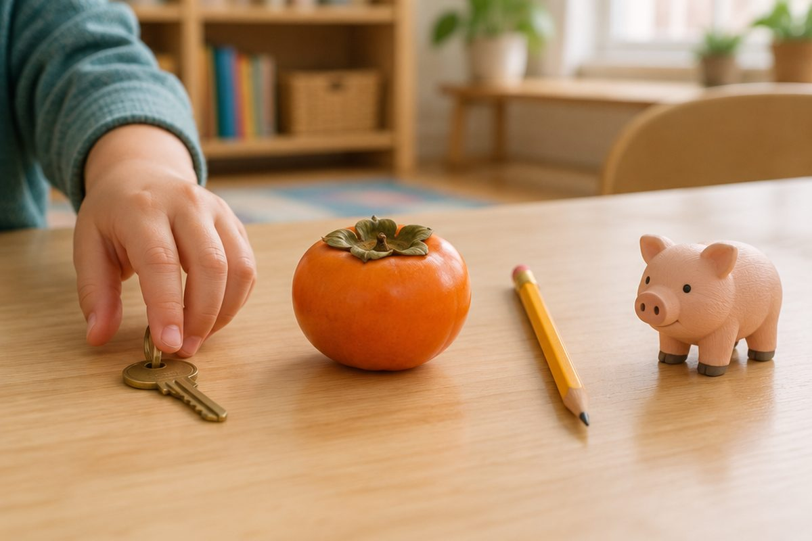

점 두 개와 동그라미 하나로 소리가 바뀐다고?

かき(카키)는 '감'인데, き 옆에 작은 점 두 개를 찍으면 かぎ(카기), '열쇠'가 돼요! 오늘은 글자에 점이나 동그라미를 붙여 새 소리를 만드는 방법을 배워요.
점 두 개 ゛를 붙이면 탁음
글자 오른쪽 위에 붙이는 작은 점 두 개(゛)를 '탁점'이라고 해요. 탁점이 붙은 글자를 '탁음'이라고 해요.
탁점은 か행, さ행, た행, は행 네 줄에만 붙어요. 탁점을 붙이면 목이 살짝 울리는 부드러운 소리가 돼요.
か(카)에 탁점을 붙이면 が(가), さ(사)는 ざ(자), た(타)는 だ(다), は(하)는 ば(바)가 돼요.
か → が(ga, 가) / さ → ざ(za, 자) / た → だ(da, 다) / は → ば(ba, 바)
탁음 네 줄 읽기
が행은 が(가) ぎ(기) ぐ(구) げ(게) ご(고), ざ행은 ざ(자) じ(지) ず(즈) ぜ(제) ぞ(조)예요.
だ행은 だ(다) ぢ(지) づ(즈) で(데) ど(도), ば행은 ば(바) び(비) ぶ(부) べ(베) ぼ(보)예요.
ぢ와 づ는 じ, ず와 소리가 같아요. 쓰이는 낱말이 아주 적어서, '지'와 '즈'는 보통 じ와 ず로 써요.
ごはん(gohan, 고항) 밥 / みず(mizu, 미즈) 물 / まど(mado, 마도) 창문 / ぶた(buta, 부타) 돼지
동그라미 ゜를 붙이면 반탁음
글자 오른쪽 위에 붙이는 작은 동그라미(゜)를 '반탁점'이라고 해요. 반탁점이 붙은 글자를 '반탁음'이라고 해요.
반탁점은 は행에만 붙어요. ぱ(pa, 파) ぴ(pi, 피) ぷ(pu, 푸) ぺ(pe, 페) ぽ(po, 포)가 돼요.
は행에는 탁점도 반탁점도 붙을 수 있어요. は(하), ば(바), ぱ(파) 세 소리를 비교해 보세요.
えんぴつ(enpitsu, 엠피츠) 연필 / たんぽぽ(tanpopo, 탐포포) 민들레 / さんぽ(sanpo, 삼포) 산책
점 하나로 뜻이 달라져요
탁점이 있고 없고에 따라 낱말의 뜻이 완전히 바뀌기도 해요. 그래서 점과 동그라미를 빠뜨리지 않고 써야 해요.
かき(카키)는 감, かぎ(카기)는 열쇠예요. ふた(후타)는 뚜껑, ぶた(부타)는 돼지예요.
かき(감) ↔ かぎ(열쇠) / ふた(뚜껑) ↔ ぶた(돼지)
핵심 낱말
- 탁점
- 글자 오른쪽 위에 붙이는 점 두 개(゛). か・さ・た・は행에 붙어요.
- 탁음
- 탁점이 붙은 글자. が, ざ, だ, ば 줄이에요.
- 반탁점
- 글자 오른쪽 위에 붙이는 작은 동그라미(゜). は행에만 붙어요.
- 반탁음
- 반탁점이 붙은 글자. ぱ, ぴ, ぷ, ぺ, ぽ예요.
꼭 알아야 할 표현
| がぎぐげご | が행 (か행 + 탁점) | ga gi gu ge go (가 기 구 게 고) |
| ざじずぜぞ | ざ행 (さ행 + 탁점) | za ji zu ze zo (자 지 즈 제 조) |
| だぢづでど | だ행 (た행 + 탁점) | da ji zu de do (다 지 즈 데 도) |
| ばびぶべぼ | ば행 (は행 + 탁점) | ba bi bu be bo (바 비 부 베 보) |
| ぱぴぷぺぽ | ぱ행 (は행 + 반탁점) | pa pi pu pe po (파 피 푸 페 포) |
| かぎ | 열쇠 🔑 | kagi (카기) |
| ごはん | 밥 🍚 | gohan (고항) |
| みず | 물 💧 | mizu (미즈) |
| ぶた | 돼지 🐷 | buta (부타) |
| かばん | 가방 🎒 | kaban (카방) |
| えんぴつ | 연필 ✏️ | enpitsu (엠피츠) |
| たんぽぽ | 민들레 🌼 | tanpopo (탐포포) |
한 줄 정리
- 탁점(゛)은 か・さ・た・は행에 붙어 が・ざ・だ・ば행이 돼요.
- 반탁점(゜)은 は행에만 붙어 ぱ ぴ ぷ ぺ ぽ(파 피 푸 페 포)가 돼요.
- かき(감)와 かぎ(열쇠)처럼 점 하나로 뜻이 바뀌니 꼭 챙겨 써요.
학교 교육과정 연결 (가정 학습 과정)
초등학교 정규 교육과정에는 일본어가 없어요. 처음 배우는 아이를 위한 가정 학습용 입문 단원이에요.